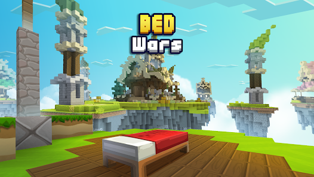
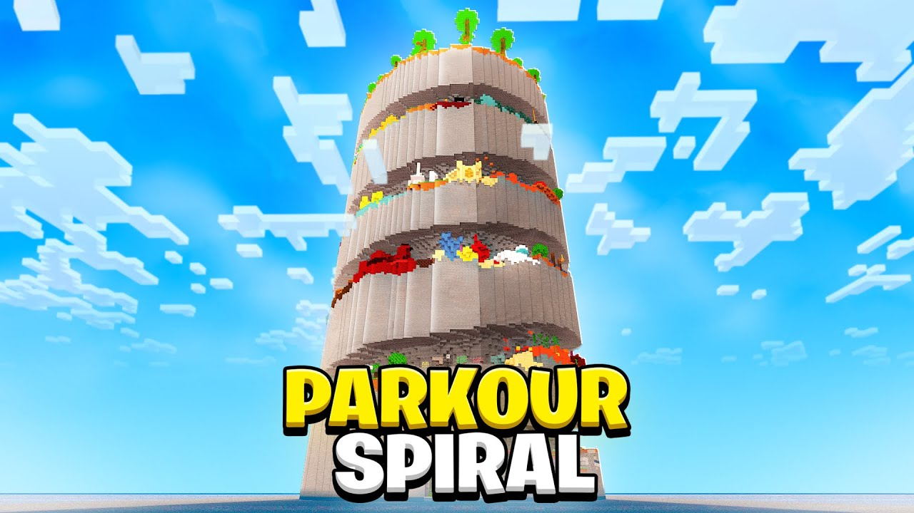
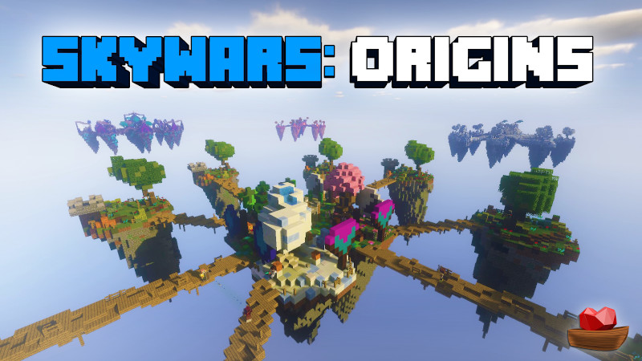

Definição
O Minecraft é um jogo eletrônico de construção em mundo aberto, desenvolvido pela Mojang Studios. Lançado inicialmente em 2011, o jogo permite aos jogadores explorar, construir e sobreviver em um ambiente gerado proceduralmente, composto por blocos tridimensionais que representam diferentes materiais, como terra, pedra, madeira e minerais.
Atualizações
Desde seu lançamento, o Minecraft passou por várias atualizações significativas que introduziram novos recursos, blocos, criaturas e mecânicas de jogo. Algumas das atualizações mais notáveis incluem:
1. Atualização "Adventure Update" (Beta 1.8): Introduziu o modo de sobrevivência, novos biomas, aldeias, fortalezas e o sistema de experiência.
2. Atualização "The Update Aquatic" (1.13): Focada em melhorar o oceano, adicionando novos blocos, criaturas marinhas, como golfinhos e tartarugas, e mecânicas de natação.
3. Atualização "Village & Pillage" (1.14): Introduziu novos tipos de aldeias, comerciantes, e a ameaça dos Pillagers, além de novos blocos e itens.
4. Atualização "Caves & Cliffs" (1.17 e 1.18): Trouxe novas cavernas, montanhas, blocos, criaturas como axolotes e cabras, e melhorias na geração do mundo.
5. Atualização "The Wild Update" (1.19): Adicionou novos biomas, como o manguezal, novas criaturas como o Warden e a aranha-caveira, além de novos blocos e itens.
Modding
O modding é uma parte essencial da comunidade do Minecraft, permitindo que os jogadores personalizem e expandam sua experiência de jogo. Mods (modificações) são criados por membros da comunidade e podem adicionar novos blocos, itens, criaturas, mecânicas de jogo e até mesmo alterar completamente a jogabilidade.
Existem várias plataformas e ferramentas que facilitam a criação e instalação de mods, como o Minecraft Forge e o Fabric. Alguns mods populares incluem:
1. OptiFine: Melhora o desempenho do jogo e adiciona opções gráficas avançadas.
2. Biomes O' Plenty: Adiciona uma grande variedade de novos biomas ao jogo.
3. Tinkers' Construct: Introduz um sistema avançado de criação de ferramentas e armas.
4. Thaumcraft: Adiciona elementos de magia e alquimia ao jogo.
5. Pixelmon: Transforma o Minecraft em um jogo de captura e batalha de Pokémon.
Comunidade
A comunidade do Minecraft é uma das mais ativas e criativas no mundo dos jogos. Com milhões de jogadores ao redor do globo, a comunidade contribui constantemente com novos conteúdos, como mods, mapas personalizados, skins e servidores multiplayer.
Além disso, existem inúmeros fóruns, redes sociais e plataformas de compartilhamento de vídeos, como YouTube e Twitch, onde os jogadores podem compartilhar suas experiências, tutoriais e criações. Eventos como a Minecon também reúnem fãs e desenvolvedores para celebrar o jogo e anunciar novidades.
Curiosidades
1. O Minecraft foi criado por Markus Persson, também conhecido como "Notch", em 2009. Ele desenvolveu o jogo inicialmente como um projeto pessoal antes de fundar a Mojang Studios para continuar seu desenvolvimento.
2. O jogo possui vários modos de jogo, incluindo o modo Sobrevivência, Criativo, Aventura e Espectador. Cada modo oferece diferentes experiências e desafios para os jogadores.
3. Minecraft é considerado um dos jogos mais vendidos de todos os tempos, com mais de 200 milhões de cópias vendidas mundialmente.
4. O jogo possui uma comunidade ativa de modders, que criam conteúdos personalizados, como mapas, skins e modificações que expandem as possibilidades do jogo.
5. Em 2014, a Mojang Studios foi adquirida pela Microsoft por 2,5 bilhões de dólares.
Minigames
1.Bedwars

Bedwars é um minigame popular no Minecraft que envolve equipes competindo para destruir as camas dos adversários enquanto protegem a sua própria. Cada equipe começa em uma ilha separada com uma cama, que serve como ponto de respawn. O objetivo é eliminar todas as outras equipes destruindo suas camas e derrotando seus jogadores.
2.Parkour
Parkour no Minecraft é um estilo de jogo que envolve correr, pular e escalar através de obstáculos e plataformas para alcançar um objetivo ou completar um percurso. Os mapas de parkour são projetados com desafios variados, exigindo habilidades de precisão e timing dos jogadores.
3.Skywars
